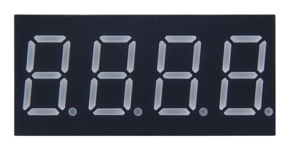

6. Pantalla de 7 segments¶
Els pendents¶
- Escriviu un número a la pantalla de 7 segments.
- Escriviu caràcters alfanumèrics a la pantalla 7 -segment.
Pantalla de 7 segments¶
La pantalla o la pantalla de set segments és un element que permet mostrar números i també símbols i caràcters de manera limitada. Aquest tipus de visualització s’utilitza en les ocasions en què es desitja una bona visibilitat i té l’avantatge de ser robust i fàcil de manejar. Es poden trobar 7 visualitzadors de segments en reproductors d'àudio, forns de microones, cotxes, rellotges, etc.
En aquest tipus de visualització només heu de definir l'estat de set elements per formar el número desitjat. En un altre tipus de pantalles més complexes, cal definir l’estat de 35 o més punts per formar un nombre o un caràcter. El desavantatge de la visualització de 7 -segments es basa en la seva poca capacitat per representar lletres i símbols.
A la figura adjunta podeu veure una pantalla de 7 segments i la nomenclatura dels seus elements.
{kind=link}


La funció `` disputa ''¶
-
dispWrite()¶ Aquesta funció us permet escriure números i caràcters a les set segments i 4 figures. Segons el nombre d’arguments i el seu tipus, es comportarà d’una altra manera.
-
dispWrite(int number)¶ Quan l'argument de la `` disputa '' és un nombre natural (0, 1, 2, ...) Aquest número es mostrarà amb quatre dígits a la pantalla. Si el nombre té menys de quatre dígits, la pantalla apaga els dígits no utilitzats a l'esquerra. Si el nombre és superior a 9999, només es representen els últims quatre dígits.
Aquests són alguns exemples de visualització.
dispWrite(0); -> [ 0 ] dispWrite(1); -> [ 1 ] dispWrite(20); -> [ 2 0 ] dispWrite(124); -> [ 1 2 4 ] dispWrite(2345); -> [ 2 3 4 5 ] dispWrite(10321); -> [ 0 3 2 1 ]
L’exemple que apareix a continuació representa a la pantalla un nombre que augmenta i disminueix amb el botó 3 i 4.
1 2 3 4 5 6 7 8 9 10 11 12 13 14 15 16 17 18 19 20 21 22 23 24 25 26 27 28 29 | // Aumenta y disminuye un número en el display
// con los pulsadores 3 y 4
#include <Picuino.h>
unsigned int number;
void setup() {
pio.begin(); // Inicializa el shield Picuino UNO
number = 100; // Valor visualizado al comienzo
}
void loop() {
// Muestra el número en el display de 7 segmentos
pio.dispWrite(number);
// Espera 10 milisegundos
delay(10);
// Si ha aumentado el contador del pulsador 3
if (pio.keyCount(3) > 0)
// Aumenta el número del display
number = number * 1.05 + 1;
// Si ha aumentado el contador del pulsador 4
if (pio.keyCount(4) > 0)
// Disminuye el número del display
number = number * 0.95;
}
|
disputa (posicionament int, segment int)
Quan els arguments de la `` disputa '' són dos números, el primer representa la posició del dígit a canviar i el segon representa els segments que voleu activar. Les posicions dels dígits són, d’esquerra a dreta, 1 2 3 4.
Els segments d’un dígit s’encenen o s’apaguen amb un número binari que representa cadascun d’ells. El primer dígit binari (més esquerra) representa el segment 'A'. El segon dígit binari representa el segment "B" i així successivament al vuitè dígit binari que no representa cap segment.
Per exemple, el número binari 0B10000000 activarà el segment 'A' i es veurà a la pantalla de 7 segments com una barra superior '¯'. El número binari 0B01100000 activarà els segments 'B' i 'C' i es veurà a la visualització de 7 segments com el número 1. El número binari 0B00000010 activarà el segment 'G' i es veurà a la visualització de 7 segments com el menys signe '-'.
De vegades serà més fàcil utilitzar els valors ja predefinits a la llibreria. A continuació, es mostra una llista amb els valors predefinits de la norma.
- ** Números: ** SS_0, SS_1, SS_2, SS_3, SS_4, SS_5, SS_6, SS_7, SS_8, SS_9
- ** Lletres: ** SS_A, SS_B, SS_B, SS_C, SS_D, SS_E, SS_F, SS_G, SS_G, SS_H, SS_H, SS_I, SS_I, SS_J, SS_K, SS_L, SS_N, SS_NY, SS_O, SS_O, SS_P, SS, SS, SS, SS, SS, SS, SS, SS_P, SS, SS_P, SS_P, SS_P, SS_P, SS_P, SS_. SS_R, SS_S, SS_T, SS_U, SS_U, SS_Y, SS_Y, SS_Z
- ** Espai blanc: ** SS_SP
També es poden crear símbols personalitzats.
El següent programa gira una barra a través dels quatre segments superiors d’un dígit.
1 2 3 4 5 6 7 8 9 10 11 12 13 14 15 16 17 18 19 20 21 22 23 24 25 | // Gira un segmento alrededor de los cuatro ledes superiores de un dígito
#include <Picuino.h>
void setup() {
pio.begin(); // Inicializa el shield Picuino UNO
}
void loop() {
// Enciende el segmento 'a' y espera 0,1 segundos
pio.dispWrite(1, 0b10000000);
delay(100);
// Enciende el segmento 'b' y espera 0,1 segundos
pio.dispWrite(1, 0b01000000);
delay(100);
// Enciende el segmento 'g' y espera 0,1 segundos
pio.dispWrite(1, 0b00000010);
delay(100);
// Enciende el segmento 'f' y espera 0,1 segundos
pio.dispWrite(1, 0b00000100);
delay(100);
}
|
El següent programa gira una barra a través de tots els segments exteriors d’un dígit.
1 2 3 4 5 6 7 8 9 10 11 12 13 14 15 16 17 18 19 20 21 22 23 24 25 26 | // Gira un segmento alrededor del primer
// dígito del display de 7 segmentos
#include <Picuino.h>
int segment;
void setup() {
pio.begin(); // Inicializa el shield Picuino UNO
segment = 0b10000000; // El primer segmento encendido es el 'a'
}
void loop() {
// Enciende el segmento seleccionado y espera 0,1 segundos
pio.dispWrite(1, segment);
delay(100);
// Desplaza el segmento hacia la derecha
segment = (segment >> 1);
// Si se ha llegado al segmento 'f'
if (segment == 0b00000010)
// Enciende el segmento 'a'
segment = 0b10000000:
}
|
Discription (Int Digit, INT Digit, INT Digit, INT Digit)
Quan la `` disputa '`té quatre arguments, cadascun s'interpreta com el valor de cada dígit del visualitzador de set segments. Aquesta forma és més còmoda per visualitzar una paraula. L'exemple següent fa que aparegui la paraula "hola" a la pantalla.
1 2 3 4 5 6 7 8 9 10 11 12 13 14 15 16 | // Muestra la palabra 'HOLA' en el display
#include <Picuino.h>
void setup() {
// Inicializa el shield Picuino UNO
pio.begin();
// Muestra la palabra 'HOLA'
pio.dispWrite(SS_H, SS_O, SS_L, SS_A);
}
void loop() {
}
|
Exercicis¶
Programa el codi necessari per resoldre els problemes següents.
Completeu el programa següent per informar -se de 10 a 0 canviant el valor una vegada cada segon. Un cop finalitzat el compte enrere, el LED vermell s’ha d’encendre.
1 2 3 4 5 6 7 8 9 10 11 12 13 14 15 16 17 18 19 20
// Cuenta atrás de 10 segundos #include <Picuino.h> int count; void setup() { pio.begin(); // Inicializa el shield Picuino UNO count = 10; while(count > 0) { // Muestra el número en el display // Espera un segundo // Reduce la variable count en una unidad } // Muestra el número en el display // Enciende el led rojo } void loop() { }
Completa el programa següent per funcionar com a daus electrònic. Quan premeu el botó 1, s'ha de mostrar un número a la pantalla de l'1 al 6.
1 2 3 4 5 6 7 8 9 10 11 12 13 14 15 16 17
// Dado electrónico #include <Picuino.h> int value; void setup() { pio.begin(); // Inicializa el shield Picuino UNO } void loop() { // Calcula un número aleatorio entre 1 y 6 value = random(1, 1 + 6); // Muestra el valor por el display // Espera 50 milisegundos // Espera mientras no se pulse la tecla 1 }
Mostra al quart dígit una animació que consisteix a il·luminar tots els segments un per un des del segment 'A' al segment 'f'. Quan tots els segments s’il·luminen, tothom s’ha d’apagar de nou i la seqüència tornarà a començar. El temps d’espera entre l’encesa d’un segment i el següent serà mig segon.
Dissenyeu dos nous símbols i realitzeu un programa que els mostri a la pantalla a les posicions 2 i 4.
Dibuixa uns pesos a la pantalla.
Mostra les paraules "hola" a la pantalla i un nom curt. Les dues paraules han d’alternar cada mig segon.
Feu una animació original a la pantalla, mostrant símbols o moviments de llum.